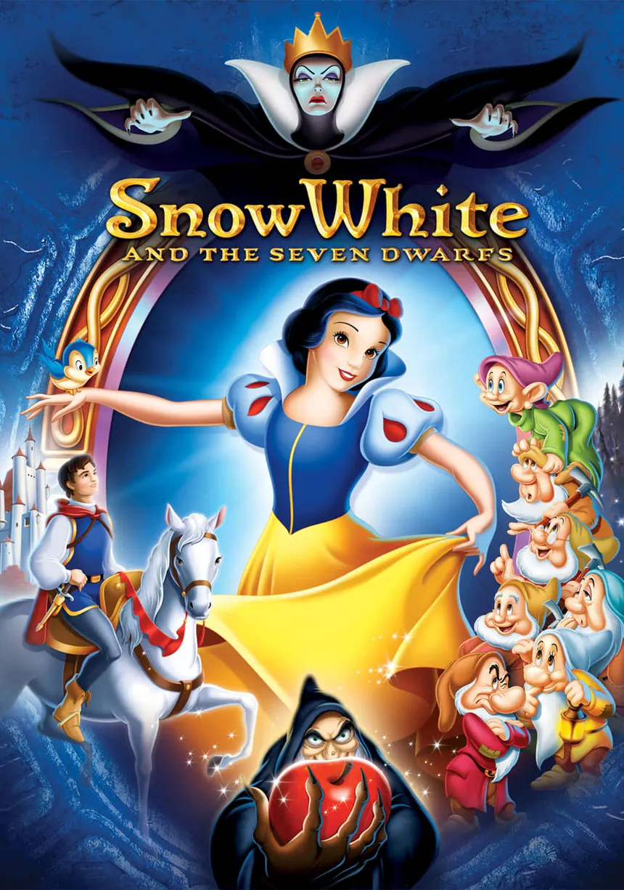
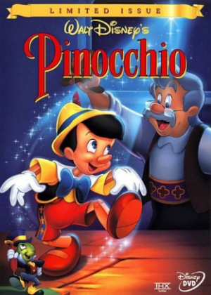

Valutazione finale: 7/10
Anno: 1937
Visto il: 14 gennaio 2026
Voto musiche: 5/10
Voto scorrevolezza: 7/10
Voto trama: 6,5/10
Voto dramma: 5,5/10
Voto divertimento: 6/10
Scena preferita: Quando la matrigna cade dal dirupo.
Note: Disegni un pò inquietanti, non capisco perché la strega sia dovuta diventare vecchia per darle la mela, poteva semplicemente jumpare dentro la casa dei nani e fargliela ingoiare. Il principe abbastanza inutile. Nel complesso il film è carino e c’è qualche scena divertente dei nani (tutti abbastanza dimenticabili tranne Brontolo).

Valutazione finale: 5/10
Anno: 1940
Visto il: 18 gennaio 2026
Voto musiche: 5/10
Voto scorrevolezza: 6/10
Voto trama: 4/10
Voto dramma: 6,5/10
Voto divertimento: 4/10
Scena preferita: Geppetto che dorme con il gatto.
Note: Totalemente diverso dalle aspettative e dalla fama, pinocchio dice praticamente in una sola scena le bugie e quindi non capisco perchè sia un suo tratto distintivo comune, più che altro è un credulone. Geppetto l’unico personaggio degno di nota, il grillo abbastanza inutile, la volpe, il gatto e gli altri personaggi inutili. Buco di trama: come ha fatto Geppetto ad essere stato inghiottito dalla balena? Pinocchio e il grillo sono fuggiti dal paese dei balocchi saltando in mare, ma che senso ha avere una porta blindata se puoi fuggire comunque in acqua? Sei scemo?.